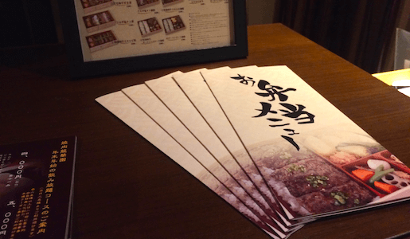
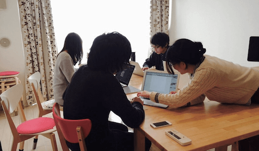

-

卓展2016 デザインを学ぶ学生による12のプロジェクトの成果発表・展示会、卓展のWebサイトを制作した。
-

Waste of Time CanvasとCreateJS、Milkcocoaを用いて、クソゲーを制作した。
-
芸工祭2015 WEBサイト 名古屋市立大学 芸術工学部の学祭「芸工祭2015」のWeb部署長を務めた話と、その特設Webサイトの制作のこと。
-
 龍華園お弁当メニュー 焼肉 龍華園での店舗設置を目的とし、宅配弁当メニューのデザイン制作。写真の撮影も全て担当した。難しかった・・。
-
からくりSHOT！ 大学２年春の授業課題。「表情と感情をつなぐメディア」をテーマに制作したWEBアプリケーション。触って遊んでみてください。
-
 UNITED 名古屋で自己ブランディングを目的として活動するWeb系の学生団体。その活動や、チームの運営などなど！